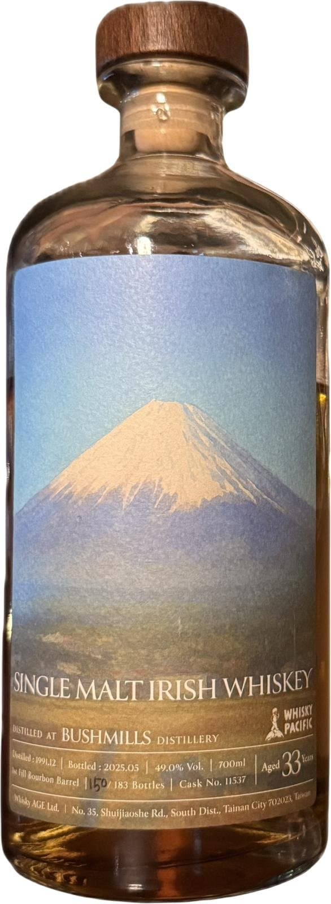
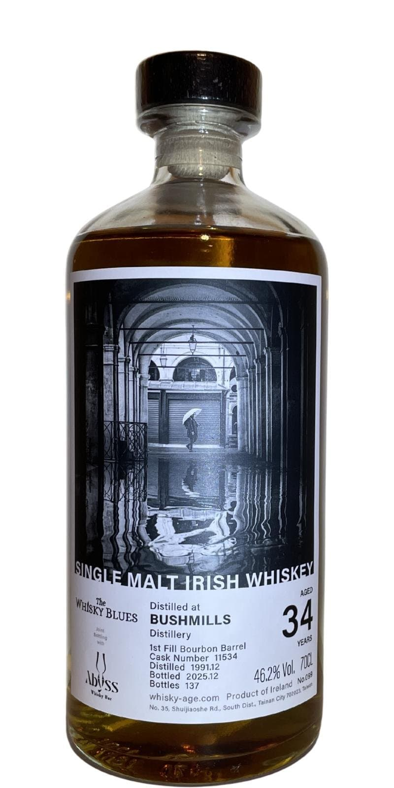
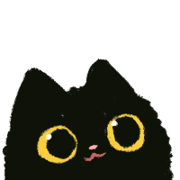

위스키에이지 부쉬밀 1991 33y 49.0%(후지산)
N
리치, 망고, 복숭아, 츄잉껌, 멘솔, 버터크림
리치, 망고와 같은 열대과일
향긋한 복숭아
이 과일들의 향이 나는 츄잉껌
시원한 멘솔이 기저에 깔려 청량감을 준다
진하고 묵직한 버터크림이 느껴지기도 함
P
리치, 복숭아, 쥬스, 츄잉껌, 후추
정말 쥬시하다
리치, 복숭아 쥬스
노즈에 이어 츄잉껌의 느낌 또한 가져간다
알싸한 후추 약간
F
감귤류 과육, 감귤류 껍질
감귤류 과육의 새콤함에 껍질의 씁쓸함
위스키에이지 부쉬밀 1991 34y 46.2%
N
좀 더 묵직, 리치, 자몽, 복숭아, 젤리, 쥬스, 멘솔
전체적으로 결은 비슷하지만 좀 더 묵직하다
리치와 자몽 쪽이 좀 더 강조되는 듯
리치, 자몽, 복숭아 풍미의 젤리, 쥬스
기분좋은 멘솔의 청량감이 느껴진다
P
자몽, 복숭아, 쥬스, 젤리
후지밀과 마찬가지로 정말 쥬시하다
자몽, 복숭아를 가득 넣은 쥬스, 젤리
자몽의 쌉쌀함이 포인트를 더해준다
F
복숭아, 자몽, 젤리, 몰티, 패션푸르트
복숭아, 자몽 젤리
자몽의 쌉싸름함과 고소한 몰티함
패션푸르트의 산미가 말미에 느껴진다
둘 다 정말 맛있다
부쉬밀 차원 달라달라
특유의 과일 풍미들이 입안에서 팡 터지면서 진하게 혀를 감싸는 그 느낌이 정말 좋다..
리뷰고 뭐고 그냥 하늘 바라보면서 술을 즐기게 되던..
난 34년 쪽이 더 취향
좀 더 복합성이 낫다고 판단함
댓글 20개
